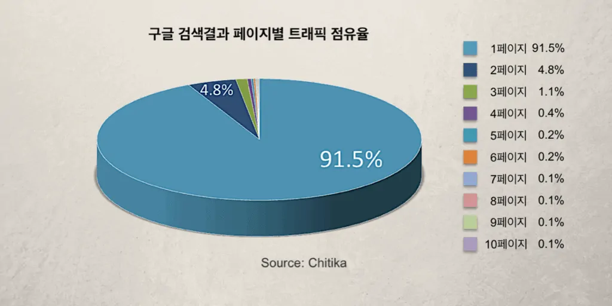
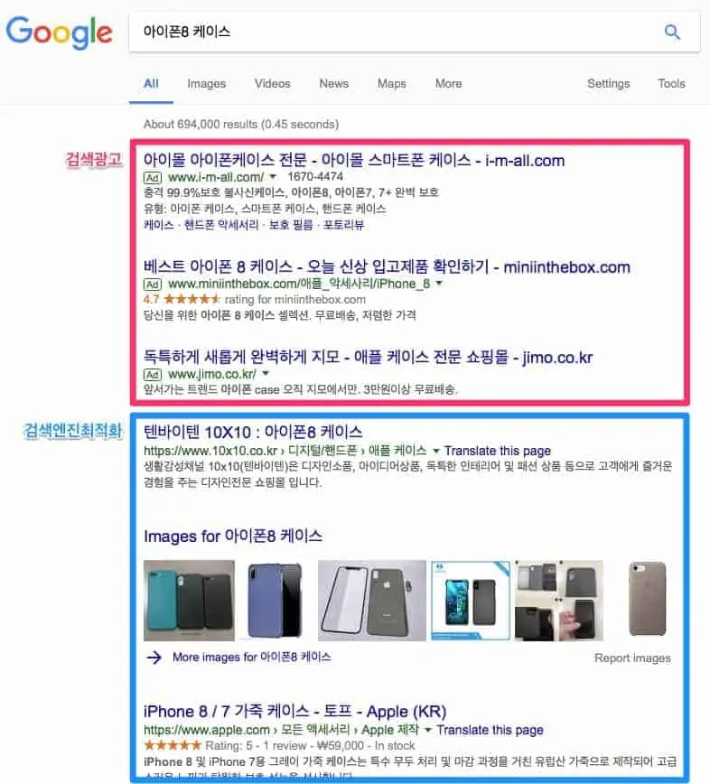

검색엔진최적화 개념 이해하기
여러분의 회사에서 젊은 층을 타겟으로 하는 의류 매장을 오픈하기 위한 장소를 탐색 중입니다. 임대료가 같다고 가정하면 ‘명동’과 ‘강원도의 한 시골 마을’ 중 어디를 선택하겠습니까? 의류 매장 뿐만 아니라 음식점, 화장품, 전자기기 매장 등 우리가 알고 있는 대부분의 회사는 ‘명동’을 택할 것입니다. 왜냐하면 명동은 구매력을 갖춘 타겟 고객들이 많이 다니는 장소이기 때문입니다. 검색엔진최적화란 한마디로 여러분의 매장(웹사이트)을 명동(검색엔진 검색결과 첫페이지_SERP)으로 이전시키는 작업입니다.

오프라인 매장이 명동과 같은 시내에 위치해야 매출이 높아지듯이 웹사이트도 마찬가지로 사람들이 자주 찾는 곳에 위치해야 더 많은 웹 트래픽을 몰고 오고 세일즈를 일으킬 수 있습니다. 온라인에서 사람들이 자주 찾는 곳은 어디일까요? 알렉사가 조사한 전세계 웹사이트의 방문 순위 Top 500위에 따르면 구글(Google.com)이 1위를 차지했습니다. 사실 굳이 통계 자료를 살펴보지 않아도 우리 주변 사람들의 생활 습관을 살펴보면 과제를 할 때, 업무를 볼 때, 여행 계획을 세울 때 등 무언가에 대한 정보를 찾아야 할 때 검색엔진 ‘구글’에 접속하는 것이 자연스러운 습관이 된 것을 알 수 있습니다.
한국에서는 구글보다 네이버가 유명하다고요? 맞습니다. 다만 전세계 주요 국가 내 검색엔진 순위를 살펴보면 한국, 중국, 러시아 단 3개국을 제외한 나머지 국가에서 구글이 압도적인 1위를 차지하고 있습니다. 그렇다면 한국, 중국, 러시아 이외의 국가를 타겟으로 하는 회사는 아무래도 ‘구글’에서의 검색엔진 최적화(구글 SEO)를 먼저 고려해봐야 할 것입니다.
검색엔진최적화 얼마나 중요할까?
사람들이 구글에서 검색하여 정보를 찾고 쇼핑도 한다는 것은 팩트입니다. 그렇기 때문에 구글에서 우리 웹사이트가 검색결과 상위에 노출되는 것이 중요하다는 것도 쉽게 이해할 수 있습니다. 그런데 검색결과 상위에 랭크되는 것이 도대체 얼마나 중요한 걸까요?

디지털마케팅회사 Chitika의 구글 검색결과 페이지 웹로그 분석 결과, 무려 91.5%의 트래픽이 검색결과 첫 페이지에 집중되어 있는 것으로 밝혀졌습니다. 다시 말해 회사와 관련된 키워드로 검색했을 때 회사 웹사이트가 검색결과 첫 페이지에 뜨지 않으면 잠재고객 트래픽을 얻을 가능성이 1/10 미만으로 현저히 낮아지게 됩니다.
조금 더 자세하게 파고들면 검색결과 첫페이지 안에서도 게재순위에 따라 얻는 트래픽에도 차이가 있습니다. 즉, 구글 검색결과 첫페이지의 1순위로 나오는 것과 첫페이지의 10순위로 나올 때 기대할 수 있는 트래픽이 다르다는 것인데요. Chitika의 조사결과를 다시 한 번 인용하면 평균적으로 첫페이지의 1순위일 때는 총 트래픽에서 32%의 트래픽을 기대할 수 있고, 10순위일 때는 2%의 트래픽을 기대할 수 있습니다.
종합해서 말하자면 총 100번의 트래픽 기회가 있다고 가정할 때, 검색결과 첫페이지에 리스팅된 열 개의 링크들이 91~92번의 트래픽을 독점하게 되고, 그 중 첫페이지의 1순위로 노출되는 웹사이트 링크가 32번의 트래픽을 가져가게 된다는 이야기입니다. 검색결과에서의 노출 순위에 따라 얻을 수 있는 트래픽의 양이 크게 변한다는 것을 알 수 있죠? ,그리고 이 ‘트래픽’이라는 것은 매출을 일으킬 수 있는 하나의 기회이기 때문에 트래픽의 증감에 따라 회사의 매출, 수익 규모가 크게 영향을 받게 됩니다.
웹사이트를 검색결과 첫페이지로 올릴 수 있는 방법은 크게 두가지가 있습니다. 검색엔진최적화와 검색광고인데요. 이 둘의 차이점을 이해하면 검색엔진최적화에 대해 보다 쉽게 이해할 수 있습니다.
검색엔진최적화와 검색광고 비교하기
아래 스크린샷에서 빨간 선으로 표시된 부분은 검색광고를 통해 구글 검색결과 상위에 노출된 것이고, 파란 부분은 검색엔진최적화를 통해 구글 검색결과의 상위에 노출되고 있는 모습입니다. 검색광고를 통해 노출되는 영역이 더 위에 있기 때문에 검색엔진 최적화 마케팅보다 광고가 낫다고 말할 수 있을까요? 조금 더 살펴보죠.

검색광고를 통해 웹사이트가 노출되기 위해선 검색엔진(구글, 네이버, 다음 등)에 비용을 지불해야 합니다. 보통 클릭당비용(Cost Per Click, CPC) 방식으로 책정이 되어 사용자가 광고를 클릭할 때마다 비용이 발생하게 되는 구조입니다. 그렇기 때문에 검색광고는 검색엔진최적화보다 비용적 부담이 클 수 밖에 없습니다.
또한 광고를 통해 노출되는 링크에는 Ad 라고 표시가 되는데요, 꽤 많은 사람들이 광고라고 표시된 검색결과를 신뢰하지 않고 자연스럽게 올라오는 검색결과를 선호한다고 합니다. 그래서 마케팅 예산이 풍족하여 검색광고에 많은 돈을 써도 사람들이 클릭조차 하지 않아 원하는 마케팅 결과가 나오지 않는 경우도 허다하게 됩니다.
반면 검색광고가 갖고 있는 이점도 무시할 수 없는데요, 검색엔진최적화는 작업을 시작하고 검색엔진에 반영되기까지 적어도 3개월의 기간이 소요되지만 검색광고의 경우 검색엔진 광고 플랫폼(구글 애드워즈, 네이버 광고)에 광고를 등록하고 돈을 입금하면 곧바로 검색엔진의 첫페이지에 노출될 수 있습니다.
검색엔진 최적화 마케팅과 검색광고는 비슷해보이면서도 다른 점이 많은 마케팅입니다. 검색엔진최적화와 검색광고마케팅의 차이점에 대해 조금 더 알아보면 우리 회사에 필요한 마케팅이 무엇인지 알게 될지도 모릅니다.